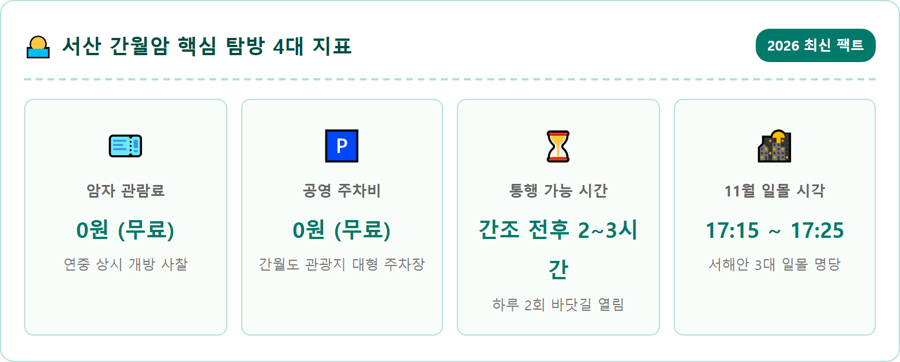
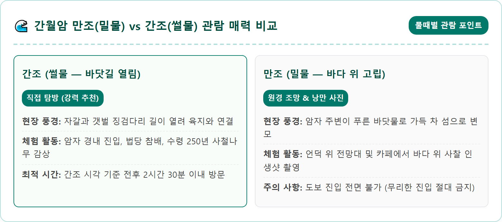
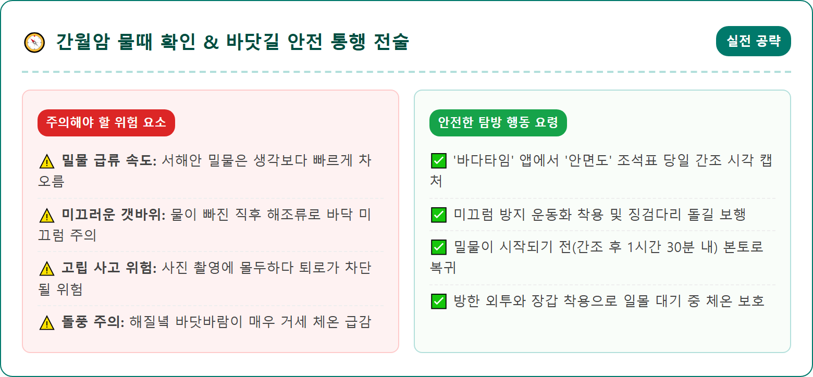
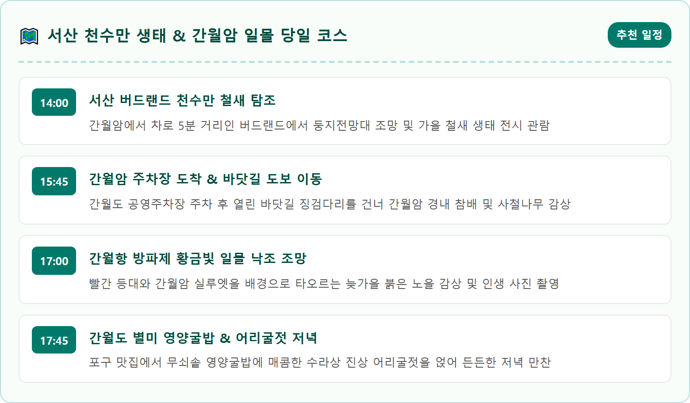
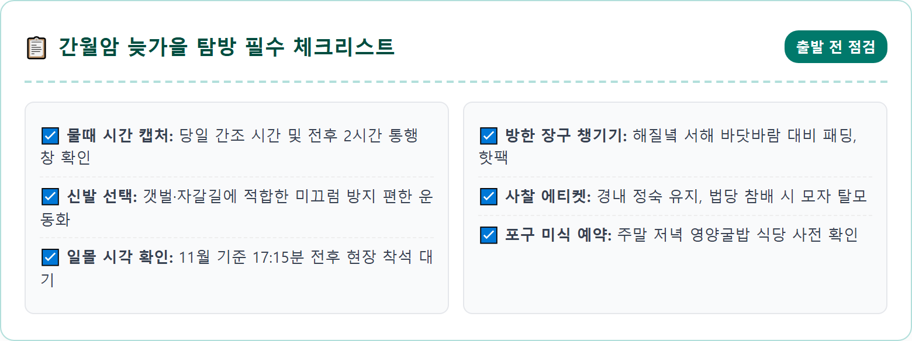
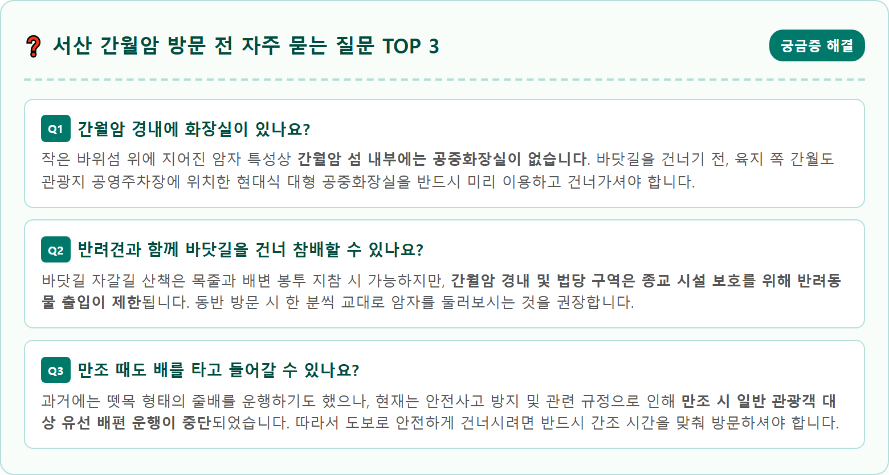

A picturesque, photorealistic late autumn sunset scenery of Ganweolam Hermitage in Seosan, South Korea. A small traditional Buddhist temple perched on a rocky islet in the West Sea during low tide, connected to the mainland by an exposed pebble and stone walking path. Fiery golden, amber, and crimson sunset sky casting warm glowing reflections across the tranquil tidal flats and calm sea. Ancient gnarled pine trees framing the temple compound. A few peaceful visitors walking across the tidal path. Professional landscape photography, tranquil spiritual atmosphere, breathtaking sunset lighting, ultra-sharp detail, 8k resolution, 1:1 aspect ratio.

충청남도 서산시 부석면 간월도리에 위치한 '간월암(看月庵)'은 서해안 천수만 작은 돌섬 위에 사뿐히 내려앉은 고즈넉한 사찰입니다. 조선 태조 이성계의 왕사이자 한양 천도를 주도했던 무학대사가 창건한 사찰로 전해지며, 무학대사가 이곳에서 달빛을 바라보며 도를 깨우쳤다고 하여 '달을 바라본다'는 뜻의 '간월암'이라는 이름이 붙여졌습니다.
이 암자가 전국적으로 손꼽히는 신비로운 명소가 된 이유는 조수간만의 차에 따라 하루에도 두 번씩 극적으로 변하는 자연의 조화 때문입니다. 밀물(만조)이 되면 섬을 둘러싼 바닷물이 차올라 마치 푸른 바다 위에 둥둥 떠 있는 외로운 연꽃 봉오리처럼 보이고, 썰물(간조)이 되면 바닷물이 양옆으로 갈라지며 자갈과 갯벌로 이루어진 30여 미터의 바닷길이 활짝 열려 육지와 연결됩니다.
간월암은 과거 일제강점기 소실되었던 것을 1941년 만공선사가 중창하여 조국 광복을 위한 천일기도를 올렸던 유서 깊은 호국 기도 도량이기도 합니다. 늦가을 해풍에 풍경 소리가 맑게 울려 퍼지는 경내에 서서 탁 트인 천수만 바다를 바라보면 마음에 쌓였던 온갖 번뇌가 거짓말처럼 씻겨 내려갑니다.
간월암 여행을 계획할 때 가장 먼저, 그리고 반드시 확인해야 할 필수 정보는 바로 '물때 시간표'입니다. 간월암은 시간대를 잘못 맞춰 방문하면 바닷물이 가득 차올라 암자 안으로 들어가지 못하고 멀리서 바라보기만 해야 하는 낭패를 겪을 수 있습니다.
물때를 확인하는 가장 확실한 방법은 국립해양조사원 스마트 조석표나 낚시·해양 정보 앱 '바다타임'에서 **'안면도' 또는 '서산' 물때**를 조회하는 것입니다. 하루에 두 번 발생하는 '간조(썰물로 물이 가장 많이 빠진 시각)'를 기준으로 앞뒤 2~3시간, 즉 총 4~6시간가량 도보 통행이 가능한 바닷길이 열립니다.
예를 들어 특정 날짜의 오후 간조 시각이 16:30분이라면, 오후 14:30분부터 18:30분까지는 여유 있게 바닷길을 걸어 암자 경내를 둘러보고 나올 수 있습니다. 반대로 만조(밀물) 시간대 전후 1~2시간에는 바닷길이 물속에 완전히 잠기므로, 이때는 바다 위에 홀로 떠 있는 암자의 운치 있는 풍경을 육지 전망대에서 감상하는 것이 감상 포인트입니다.

간월암은 안면도 꽃지해수욕장, 강화도 적석사와 함께 충청·서해권을 대표하는 3대 낙조 명소로 명성이 자자합니다. 특히 11월 늦가을의 일몰은 습도가 낮고 대기가 청명하여 붉은 노을의 채도가 일 년 중 가장 선명하고 깊은 농도를 자랑합니다.
오후 5시가 가까워지면 서쪽 하늘이 노란빛에서 주황빛, 붉은 다홍빛으로 서서히 그러데이션을 이루며 타오르기 시작합니다. 천수만의 고요한 바다 위로 지는 태양이 붉은 융단을 깔아놓은 듯 긴 금빛 윤슬을 드리우고, 그 중심에 실루엣으로 서 있는 간월암의 전통 기와지붕과 고목의 자태는 한 폭의 수묵담채화를 연상케 합니다.
해가 수평선 너머로 모습을 감춘 뒤 20~30분간 이어지는 여명(애프터글로우) 시간대에는 하늘 전체가 은은한 자줏빛과 분홍빛으로 물들며 가슴 벅찬 감동을 안겨줍니다. 간월항 방파제의 빨간 등대 쪽으로 걸어가 등대와 간월암, 그리고 노을빛을 한 앵글에 담으면 평생 간직할 인생 최고의 풍경 사진을 완성할 수 있습니다.

바닷길을 건너 돌계단을 따라 암자 경내로 들어서면, 바다 한가운데라는 지리적 특성이 믿기지 않을 만큼 아늑하고 정갈한 사찰의 정취가 방문객을 맞이합니다. 경내 중심에 자리한 대웅전에는 관세음보살상이 봉안되어 있어 참배객들의 발길이 끊이지 않습니다.
대웅전 마당 한편에는 바닷바람을 온몸으로 견뎌내며 푸르름을 지켜온 수령 약 250년의 거대한 '사철나무'가 우뚝 서 있습니다. 척박한 해안 암반에 뿌리를 내리고 모진 풍파를 이겨낸 사철나무의 억센 줄기는 간월암의 오랜 역사를 묵묵히 증명하고 있습니다.
마당 난간을 따라 걸어가면 바다를 바라보는 작은 관음보살상과 방문객들이 정성스럽게 소원을 적어놓은 소원 기와들이 가지런히 놓여 있습니다. 저마다의 간절한 소망이 적힌 기와 너머로 부서지는 파도 소리를 들으며 소원 동전을 던져보는 소소한 체험은 여행의 마음에 따스한 온기를 더해줍니다.

간월암을 찾았다면 빼놓을 수 없는 필수 미식 코스가 바로 '간월도 어리굴젓'과 '영양굴밥'입니다. 간월도 갯벌은 조수간만의 차가 크고 일조량이 풍부하여 이곳에서 자란 자연산 굴은 알이 야무지고 식감이 유난히 쫄깃합니다. 조선 태조 이성계가 무학대사가 보낸 간월도 어리굴젓을 맛보고 그 맛에 탄복하여 대궐의 수라상 진상품으로 지정했다는 유명한 일화가 전해집니다.
어리굴젓의 '어리'는 '얼간' 즉 소금을 알맞게 적게 쳐서 삼삼하게 절였다는 뜻으로, 고춧가루와 갖은양념으로 버무려 항아리에서 자연 숙성시켜 톡 쏘는 매콤함과 깊은 바다향의 조화가 일품입니다.
간월항 먹거리 골목의 식당들에서는 주문 즉시 돌솥이나 무쇠솥에 갓 지어내는 '영양굴밥'을 선보입니다. 통통한 자연산 굴과 표고버섯, 은행, 대추, 밤, 흑미를 듬뿍 넣고 지은 밥에 달래간장이나 버터를 살짝 넣고 비빈 후, 빨간 어리굴젓 한 점을 얹어 김에 싸 먹으면 감탄사가 절로 나오는 꿀맛을 경험할 수 있습니다. 바삭하게 부쳐낸 굴파전과 구수한 숭늉으로 마무리하면 완벽한 포만감을 누릴 수 있습니다.

간월암 바로 옆에 자리한 '간월항'은 소박한 고깃배들이 정박해 있는 전형적인 서해 어촌 포구입니다. 최근에는 방파제를 따라 바다 위로 길게 뻗은 해양 스카이워크 전망 데크가 조성되어 여행자들에게 새로운 산책 명소로 각광받고 있습니다.
방파제 끝에는 푸른 바다와 극명한 대비를 이루는 '빨간 등대'가 우뚝 서 있습니다. 바다 쪽으로 뻗어 있는 스카이워크를 걸어가면 사방이 시원하게 트인 천수만 바다 한가운데 서 있는 듯한 상쾌함을 느낄 수 있습니다.
이곳은 낚시 동호인들에게도 유명한 포인트로, 방파제 주변에서 우럭, 노래미, 망둑어를 낚는 강태공들의 평화로운 풍경을 만날 수 있습니다. 일몰 무렵 스카이워크 난간에 기대어 서서 붉게 물드는 바다와 갈매기들의 군무를 바라보는 것은 일상의 시름을 잊게 만드는 치유의 시간입니다.

간월암에서 서해안 간척지 도로를 따라 차로 단 5분(약 4km)만 이동하면 동양 최대의 철새 도래지인 천수만을 테마로 조성된 '서산 버드랜드'를 만날 수 있습니다. 간월암의 물때를 기다리거나 일몰 전에 오후 일정을 채우기에 가장 완벽한 짝꿍 여행지입니다.
서산 버드랜드는 200여 종의 다양한 철새 표본과 입체적인 생태 디오라마가 전시된 철새박물관, 4D 영상관, 숲속 놀이터를 갖추고 있습니다. 특히 배 모양을 본떠 만든 높이 30m의 '둥지전망대'에 오르면 드넓은 천수만 농경지와 간월호 수면이 시원하게 파노라마로 펼쳐집니다.
11월 중순은 시베리아에서 날아온 기러기와 큰고니, 가창오리 떼가 천수만 들녘을 가득 채우는 시기이므로, 전망대에 설치된 망원경을 통해 자연 그대로의 철새 무리를 생생하게 관찰할 수 있습니다. 아이들과 함께하는 가족 여행자라면 생태 학습과 자연 힐링을 동시에 충족할 수 있는 필수 코스입니다.
물이 빠진 직후의 간월암 바닷길은 자갈과 조개껍데기, 갯벌 흙이 섞여 있어 바닥이 고르지 않고 젖어 있습니다. 따라서 밑창이 얇은 단화나 가죽구두는 파손되거나 미끄러질 위험이 있으므로, 바닥 접지력이 우수한 트레킹화나 편안한 운동화를 착용하시는 것이 안전합니다.
서해 바닷바람은 오후 4시 이후 해가 기울기 시작하면 급격히 차가워집니다. 바다 한가운데 노출된 암자 주변은 체감 온도가 매우 낮으므로 목을 감싸주는 터틀넥이나 스카프, 경량 패딩 점퍼, 핫팩 등을 미리 준비하시는 것이 감기 예방에 필수적입니다.
또한, 물이 들어오는 초입에는 물길이 순식간에 불어나므로 안내 방송이나 현장 관리인의 지시에 귀를 기울이시고, 간조 시각이 지나 1시간 30분 이상 경과했다면 미련 없이 육지 쪽으로 걸어 나오셔야 안전사고를 예방할 수 있습니다.
서산 간월암은 서해안고속도로를 이용하면 수도권에서 약 1시간 40분~2시간이면 닿을 수 있어 당일치기 가을 드라이브 코스로 인기가 높습니다.
내비게이션에 '간월암' 또는 '간월도리 공영주차장'을 검색하시면 되며, 서해안고속도로 홍성IC에서 빠져나와 안면도 방면으로 국도와 천수만 방조제 도로를 따라 약 15분간 직진하면 쉽게 도착합니다.
주차는 간월도 관광단지 입구에 대형 관광버스와 승용차 수백 대를 수용할 수 있는 대규모 무료 아스팔트 주차장이 마련되어 있습니다. 주차비는 전액 무료이며, 주차장 바로 옆에 깨끗한 공중화장실과 편의점, 특산물 판매장이 밀집해 있습니다. 대중교통을 이용하실 경우 서산공용버스터미널에서 간월도 방면 시내버스(약 1시간 간격 운행)를 탑승하시면 간월도 종점 정류장에 하차하여 도보 3분 만에 바닷길 입구에 도착할 수 있습니다.
| 구분 | 상세 정보 | 방문 꿀팁 |
|---|---|---|
| 위치 | 충청남도 서산시 부석면 간월도1길 119-8 (간월암) | 내비: 간월암 또는 간월도 공영주차장 |
| 관람 시간 | 일출 시부터 일몰 시까지 (물때 개방 시간 내) | 암자 관람료 및 문화재 입장료 무료 |
| 물때 확인처 | 국립해양조사원 스마트 조석표 / '바다타임' 안면도 물때 | 간조 시각 기준 전후 2~3시간 통행 가능 |
| 주차 시설 | 간월도 관광지 대형 공영주차장 (전액 무료) | 화장실은 반드시 주차장에서 미리 이용 |
| 대표 먹거리 | 수라상 진상 원조 어리굴젓, 영양굴밥, 굴파전 | 간월항 포구 일대 전통 식당 밀집 |